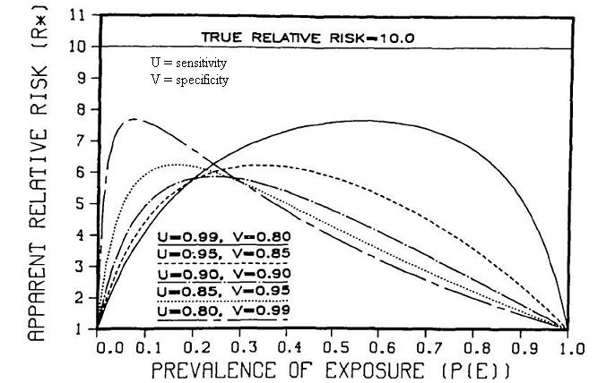

Example of Misclassification Bias
Non-Differential Exposure - Cohort Study
Lead Author(s): Jeff Martin, MD
Flegal (1986) plots the effect of non-differential misclassification of exposure in a cohort study.
- Here, the true risk ratio is 10.
- U is equal to the sensitivity of the exposure measurement.
- V is equal to the specificity of the exposure measurement.
- The 5 lines show some representative combinations of sensitivity and specificity.

The figure points out a few things:
1. Even with these seemingly reassuring combinations of sensitivity and specificity, the highest risk ratio we can get is 8 or a 20% decline.
2. For most overall prevalences of exposure, say from .25 and higher, you see a bigger influence of sensitivity than specificity.
- At a prevalence of overall exposure of 50%, near perfect sensitivity but 80% specificity gives you an apparent risk ratio of about 7.63
- A situation with near perfect specificity but 80% sensitivity gives a risk ratio of about 4.
- This changes, however, when you have overall prevalence of exposure below about 0.25.
3. Illustrating the important dependence of the prevalence of the exposure. As you get to the extremes of imbalance between exposed and unexposed, you see that the apparent (or observed) risk ratio starts to plummet.
Is it theoretically possible to have differential misclassification of exposure in a cohort study? No, because at the beginning of a cohort when measurements of exposure are made the outcome has not yet occurred.
References
Flegal, K. M., Brownie, C., & Haas, J. D. (1986). The effects of exposure misclassification on estimates of relative risk. Am J Epidemiol, 123 (4), 736-751.